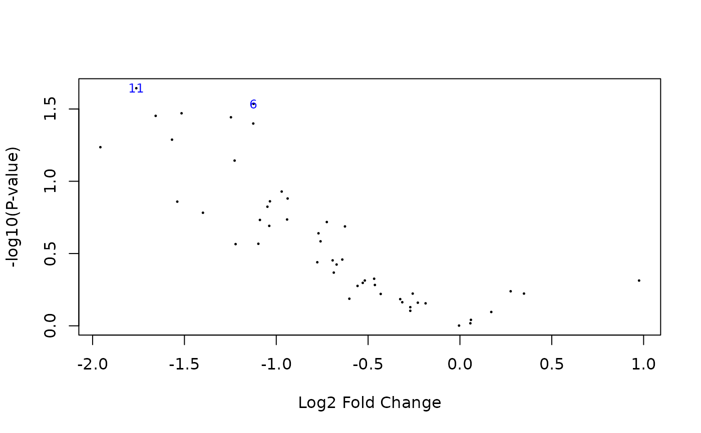

Phylogenetic Correlation using a Consensus Tree
phylogeneticCorrelations.RdThis function finds a consensus correlation structure common to all genes,
that can be used as an entry in phylolmFit.
It is similar to duplicateCorrelation,
but instead of being simply block diagonal, the correlation matrix
has a structure given by the phylogenetic tree and the model of trait
evolution.
Arguments
- object
a matrix data object containing normalized expression values, with rows corresponding to genes and columns to samples (species).
- design
the design matrix of the experiment, with rows corresponding to samples and columns to coefficients to be estimated. Defaults to the unit vector (intercept).
- phy
an object of class
phylo, representing the phylogenetic relationships between the species. It must be dated and ultrametric. If the column names ofobjectfollow the patternSpeciesName_SampleIdorSpeciesName.SampleId, an automatic matching of the samples on the tip of the tree is performed. Otherwise, the tree tip labels must match with species names incol_species(see below). The tip labels of the tree can also match exactly the names as the columns ofobject, so that the tree directly includes all the replicates.- col_species
a character vector with same length as there are columns in the expression matrix, specifying the species for the corresponding column. If left
NULL(the default), an automatic parsing of species names with sample ids is attempted.- model
the phylogenetic model used to correct for the phylogeny. Must be one of "OUfixedRoot" (the default), "BM", or "lambda". See
phylolmfor more details.- measurement_error
a logical value indicating whether there is measurement error, or individual independent (non phylogenetic) variation among samples. Default to
TRUE. Setting this toFALSEcan give unexpected results, except for the "lambda" model. Seephylolmfor more details.- trim
a vector of size two, with the fraction of observations to be trimmed from the lower and upper ends of
atanh(all.lambdas)andatanh(rho)when computing the trimmed mean. If a single value is provided, it is recycled as a vector of size two. Default toc(0.25, 0.05). See also thetrimargument induplicateCorrelation.- REML
Use REML (default) or ML for estimating the parameters.
- ncores
number of cores to use for parallel computation. Default to 1 (no parallel computation).
- ...
further parameters to be passed to
phylolm.
Value
An object of class ConsensusTreeModel-class.
This consensus tree defines a correlation structure,
and can be passed on to phylolmFit.
Details
This function finds a consensus tree in two steps:
Fit a phylogenetic linear model with
phylolmon each gene.Use the trimmed mean of transformed parameters to get one regularized value for all the genes.
Given a vector of parameters params_genes on all genes,
the consensus parameter param_consensus is found using the formula:
The regularized parameters params depend on the phylogenetic model used:
For a BM with measurement error or a Pagel's lambda model, the regularized parameter is
lambda.For a OU process with measurement error the regularized parameters are
lambdaandrho.
The consensus tree can then be given to phylolmFit with the
argument consensus_tree.
This two step procedure is equivalent to calling phylolmFit
with use_consensus = TRUE and no consensus tree directly (see Examples).
The default bounds on the phylogenetic parameters are the same as in
phylolm, except for the alpha parameter of the OU,
that use ad-hoc bounds from function getBoundsSelectionStrength,
and the sigma2_error of the intra-specific variance,
that takes it lower bound from function getMinError.
Examples
## Use the normalized Crayfish dataset
data(crayfish)
# For more details on the normalization, see \code{vignette("crayfish_exemple_tutorial")}
norm_data <- lengthNormalizeRNASeq(crayfish$counts, crayfish$lengths)
## Design matrix
design <- model.matrix(~ sights, model.frame(crayfish$sights))
## Consensus tree (using only genes 1 to 50)
ctree <- phylogeneticCorrelations(norm_data[1:50, ], design = design, phy = crayfish$tree)
#> Loading required package: ape
ctree
#> ConsensusTreeModel
#> Consensus tree on: 50 genes.
#> Model: OUfixedRoot, with measurement error.
#> Consensus parameters: lambda = 0.7632214, rho = 0.911506
## linear model fit using the consensus tree
pfit <- phylolmFit(norm_data[1:50, ], design = design, phy = crayfish$tree, consensus_tree = ctree)
pfit
#> PhyloMArrayLM
#> Fit on: 50 genes.
#> Model: OUfixedRoot, with measurement error.
#> Using a consensus tree.
## eBayes correction
pfit <- limma::eBayes(pfit, trend = TRUE)
limma::topTable(pfit, coef = 2)
#> logFC AveExpr t P.Value adj.P.Val B
#> OG0000013 -1.762035 4.157728 -2.371752 0.02271043 0.3322022 -4.553342
#> OG0000006 -1.123699 4.661495 -2.264746 0.02913447 0.3322022 -4.557420
#> OG0000011 -1.515651 6.119281 -2.198865 0.03385542 0.3322022 -4.559880
#> OG0000045 -1.656621 4.360357 -2.180602 0.03527915 0.3322022 -4.560555
#> OG0000017 -1.246775 3.627495 -2.170592 0.03608178 0.3322022 -4.560923
#> OG0000000 -1.125277 3.112778 -2.125918 0.03986427 0.3322022 -4.562556
#> OG0000041 -1.567679 3.964510 -2.008296 0.05153887 0.3631216 -4.566756
#> OG0000025 -1.957641 4.706274 -1.952082 0.05809945 0.3631216 -4.568710
#> OG0000031 -1.226828 4.569394 -1.849555 0.07192955 0.3996086 -4.572180
#> OG0000046 -0.970511 6.000647 -1.599226 0.11780259 0.5133275 -4.580095
## Volcano plot
limma::volcanoplot(pfit, coef = 2, highlight = 2)

## Direct call to phylolmFit gives the same results
pfit <- phylolmFit(norm_data[1:50, ], design = design, phy = crayfish$tree)
pfit
#> PhyloMArrayLM
#> Fit on: 50 genes.
#> Model: OUfixedRoot, with measurement error.
#> Using a consensus tree.
## eBayes correction
pfit <- limma::eBayes(pfit, trend = TRUE)
limma::topTable(pfit, coef = 2)
#> logFC AveExpr t P.Value adj.P.Val B
#> OG0000013 -1.762035 4.157728 -2.371752 0.02271043 0.3322022 -4.553342
#> OG0000006 -1.123699 4.661495 -2.264746 0.02913447 0.3322022 -4.557420
#> OG0000011 -1.515651 6.119281 -2.198865 0.03385542 0.3322022 -4.559880
#> OG0000045 -1.656621 4.360357 -2.180602 0.03527915 0.3322022 -4.560555
#> OG0000017 -1.246775 3.627495 -2.170592 0.03608178 0.3322022 -4.560923
#> OG0000000 -1.125277 3.112778 -2.125918 0.03986427 0.3322022 -4.562556
#> OG0000041 -1.567679 3.964510 -2.008296 0.05153887 0.3631216 -4.566756
#> OG0000025 -1.957641 4.706274 -1.952082 0.05809945 0.3631216 -4.568710
#> OG0000031 -1.226828 4.569394 -1.849555 0.07192955 0.3996086 -4.572180
#> OG0000046 -0.970511 6.000647 -1.599226 0.11780259 0.5133275 -4.580095